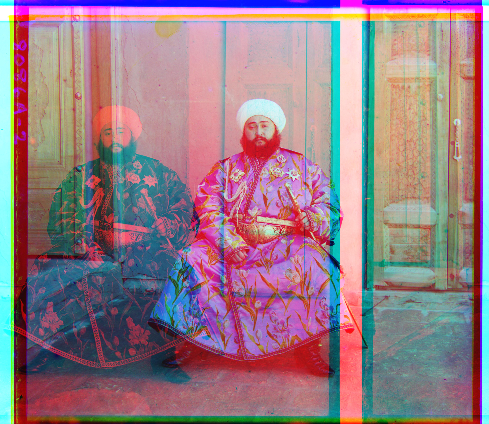
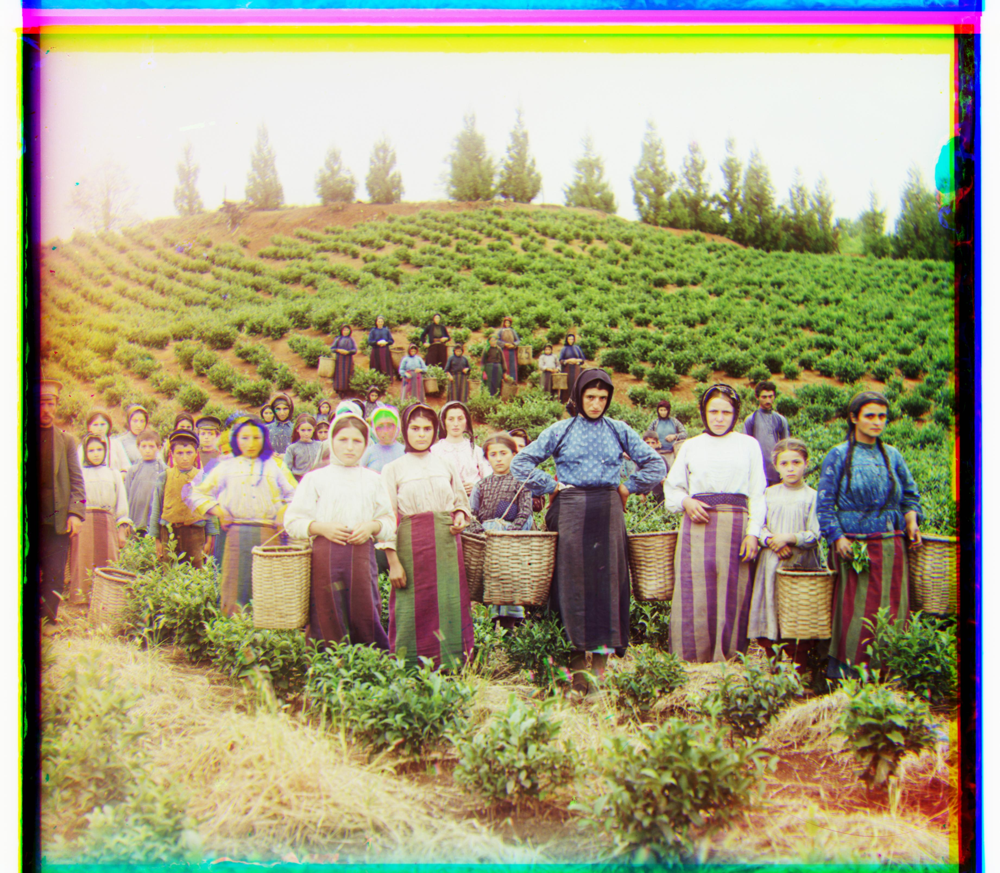
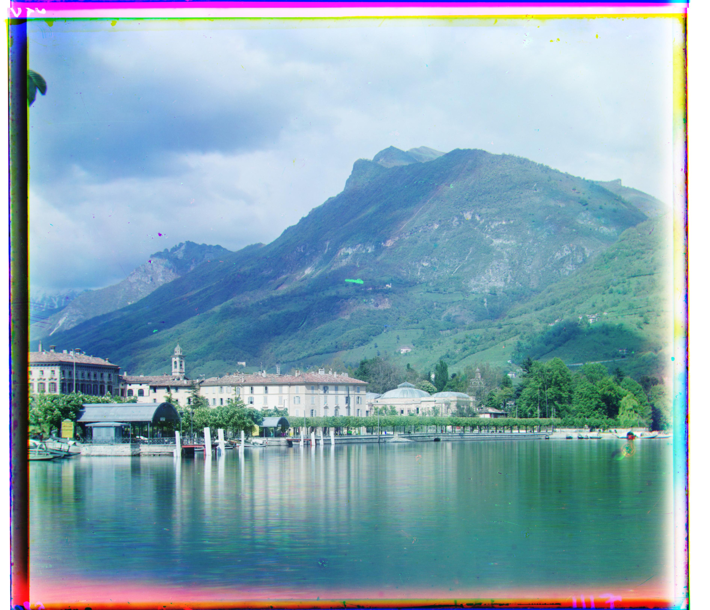
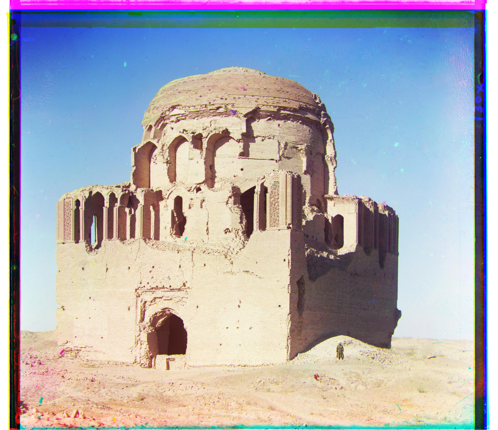
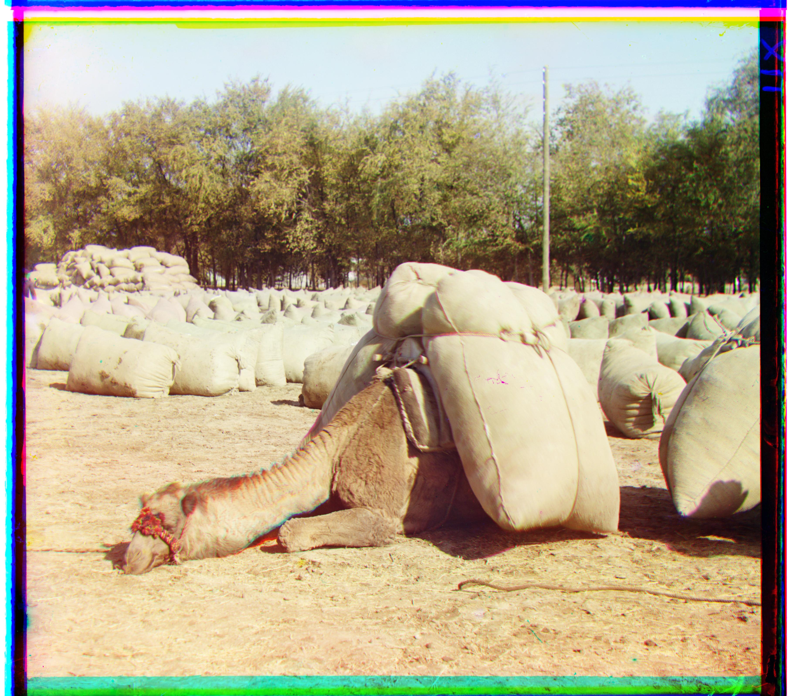

Overview
This project implements an algorithm to automatically colorize the digitized Prokudin-Gorskii glass plate images. The goal is to extract three color channel images, align them properly, and combine them into a single RGB color image with minimal visual artifacts.
Sergei Mikhailovich Prokudin-Gorskii (1863-1944) was a pioneering photographer who captured the Russian Empire using red, green, and blue filters on glass plates, envisioning a future of color photography decades before it became practical.
Approach
Single-Scale Alignment (Basic Cathedral, Monastery, Tobolsk Images)
For simple alignment, we generate a matrix of shifts for x and y coordinates of the image. The algorithm moves through each possible displacement and checks the alignment of pixels using Normalized Cross-Correlation (NCC).
NCC works like a dot product but normalizes the magnitudes of each image "vector". This means we're essentially comparing the "directions" of the image to measure alignment, which filters out factors that may affect magnitude such as rolling the image a certain number of pixels. We add a small constant (1E-12) to the denominator of the norms to prevent division by zero when one of the norms is 0.
The algorithm goes through each combination of x and y shift, records the NCC score for each pair, then returns the argmax - the x and y shift that caused the highest normalized cross correlation. An important consideration is that we need to crop the image since shifting an uncropped image fundamentally changes the image itself, which could introduce confounding factors that influence the NCC.
Multi-Scale Pyramid Alignment (Higher Resolution Images)
For higher resolution images, single-scale alignment doesn't work well. Using the same search margin (e.g., 25 pixels) represents a much smaller relative area on high-resolution images, meaning we may miss stronger displacements that require larger shifts.
Instead, we use iterative processing with image pyramids. Each level in the pyramid is lower resolution (taking every other pixel to scale by 2). While this risks aliasing by folding higher frequencies into lower resolution slices, it works well in practice for relatively smooth images.
This approach allows us to search far fewer pixels since each pixel in lower resolution images corresponds to many pixels in the full resolution image. We align the lower resolution images using the same method as single-scale alignment (using NCC) and record the pixel shift. Given this integer tuple of shifts, we scale it by 2 (assuming scale factor of 2) - if we needed to move a 100x100 pixel image by 5 pixels, this corresponds to a 10 pixel shift in the 200x200 version.
Using this "starting hint", we search for the best fit in a much smaller margin around the starting shift, then repeat this process to find increasingly precise alignments. This saves tremendous compute time: the original single alignment takes about 5 minutes per image, while pyramids take only ~15 seconds per image on GPU. We utilize this extra compute efficiency to search a much larger space (e.g., 64 pixel margin in the lowest resolution) to ensure we don't miss anything.
Single-Scale Alignment Results
Results using single-scale alignment on low-resolution JPEG images:
Cathedral

R shift: (dy: -329, dx: -387)
Monastery

R shift: (dy: -338, dx: -389)
Tobolsk

R shift: (dy: -335, dx: -393)
Multi-Scale Pyramid Results
Results using pyramid alignment on all example images (both JPEG and TIFF):
Church

R shift: (dy: 58, dx: -4)
Emir
R shift: (dy: 156, dx: -1047) ⚠️
Harvesters
R shift: (dy: 124, dx: 14)
Icon
R shift: (dy: 89, dx: 23)
Lugano
R shift: (dy: 93, dx: -29)
Melons

R shift: (dy: 178, dx: 13)
Self Portrait

R shift: (dy: 176, dx: 36)
Three Generations

R shift: (dy: 112, dx: 11)
Siren

R shift: (dy: 96, dx: -25)
Italil

R shift: (dy: 76, dx: 35)
Lastochikino

R shift: (dy: 75, dx: -9)
Additional Images from Collection
Results on additional images downloaded from the Prokudin-Gorskii collection:
Mosque
R shift: (dy: 70, dx: 11)
Camel
R shift: (dy: 98, dx: -19)
Trio

R shift: (dy: 85, dx: -42)
Alignment Failures
Failed Image: Emir
Reason: The Emir image failed due to significantly different brightness values across channels, making traditional pixel-based metrics ineffective. The large R shift value of -1047 indicates the algorithm couldn't find proper alignment.
Implementation Details
Key Design Decisions
- Metric Choice: NCC with mean subtraction and 1e-12 epsilon to prevent division by zero
- Pyramid Levels: Up to 6 levels, stopping when image dimensions < 64 pixels
- Search Window: ±64 pixels at coarsest level, ±5 pixels for refinement
- Border Handling: 10% crop fraction on all sides when computing NCC scores
- Performance: GPU acceleration with CuPy when available, ~15 seconds per image
Challenges Overcome
Implemented robust pyramid scaling with proper shift accumulation across levels. Used np.roll for efficient image shifting and handled edge cases where cropping removes all pixels.